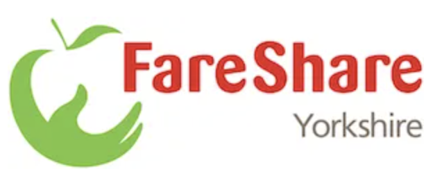

FareShare and Rethink Food

Introduction
FareShare Yorkshire and Rethink Food are key cogs in enabling many Food Aid Providers to carry out their work through by supplying them Food on a Weekly Basis. Both operate from centralised Warehouses in Leeds. FareShare in the South in Beeston and Rethink Food in the West of the city in Pudsey. Both organisations emerged in Leeds around the middle part of the last decade (2014 / 15) and were both well placed to respond quickly to the Coronavirus Pandemic when it hit in the middle of March 2020. Between the 2 organisations over 1500 Tonnes of food was distributed between April 1st 2020 and 31st March 2021. Both organisations work well with the City Council and are a key parts of the Leeds Food Aid Network (FAN).
FareShare Yorkshire
FareShare Yorkshire works in partnership with the UK’s largest food charity, FareShare. We are part of a network of 25 regional centres located across the UK, of which we operate three (Barnsley, Leeds and our Yorkshire Storage HUB).
We are a community of independent franchised charities, all fighting the same issues: hunger, food insecurity issues and food waste. Over 270,000 tonnes of perfectly edible surplus food is thrown away each year. We want to see that food put to good use.FareShare Yorkshire was formed in 1998 to help tackle the food poverty issues across the county by redistributing surplus food across the region. FareShare Yorkshire source and redistribute quality, in date surplus food which would otherwise have go to waste, we turn an environmental problem into a social solution which benefits hundreds of community projects in Leeds and Yorkshire.
Phone: 0113 2940 372
Email: enquiries@fareshareyorkshire.org
Rethink Food
Rethink Food is a not for profit company. We are working to achieve food security for life by changing the way we think about food whilst also working to the UN’s Sustainable Development Goals. These 17 goals are an urgent call for action by all countries to work in global partnership to end poverty and other deprivations by improving health and education, reducing inequality, preventing obesity and spurring economic growth whilst tackling the huge environmental concerns of tackling climate change and working to preserve our oceans and forests.
RETHINK FOOD EDUCATION provides schools with a weekly delivery of food, access to an education resource via the Rethink Food Academy platform, school assemblies, pupil workshops and staff training opportunities. This is a sustainable resource that helps children to become more carbon resourceful. Children are encouraged to eat to save the planet. Since the Pandemic the organisation has developed a membership scheme where food aid providers pay for a weekly amount of food.
Contact: info@rethinkfood.co.uk
0113 873 0016